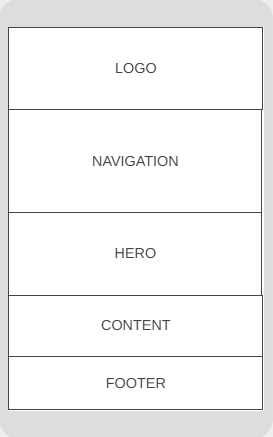
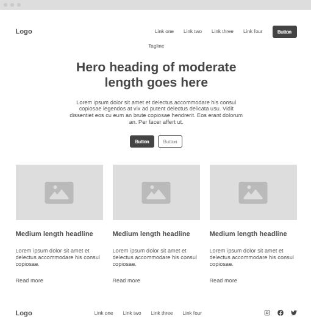

GoBag Ready - Website Project Site Plan
Site Name
GoBag Ready – This name was chosen because it clearly communicates the purpose of the site: to help people be ready with their emergency backpack ("go bag"). It is short, memorable, and directly related to the topic of emergency preparedness.
Site Purpose
The purpose of this site is to educate users about the importance of having an emergency backpack and guide them step-by-step in building their own. The site will include recommended items, tips for different climates or regions, and downloadable/printable checklists.
Scenarios
- What essential items should I include in a go bag for my family?
- How can I adapt my go bag based on where I live (earthquake, flood, war risk, etc.)?
Color Schema
- Deep Teal (#155e75): Used for headings and navigation bar for a sense of calm professionalism and urgency.
- Light Gray (#f4f7f8): Used as the background color for high readability and softness.
Typography
- Roboto: Used for both headings and body text to ensure readability and a modern, clean appearance.
Wireframes
Mobile View

- Logo and navigation bar at the top
- Hero image or icon and call to action
- Scroll-down sections for intro, checklist preview, region-based tips
Desktop View

- Left-aligned logo with horizontal navigation
- Split layout with intro text on left and image on right
- Interactive checklist and info sections beneath in a grid format